Variance-preserving normalization of fiscal ratios
Source:vignettes/variance-preserving-normalization.Rmd
variance-preserving-normalization.RmdWhy the measurement model comes first
A fiscal-health index is only as good as the correlation matrix it is built from. Two decisions made before any factor analysis shape that matrix:
- Which organizations have a defined value for each ratio. Many ratios are undefined for large, non-random groups: organizations with no current liabilities, no unrestricted net assets, or no functional expense detail. How those cases are handled (dropped, set to a fixed value, or imputed) decides who is in the correlation matrix and where they sit.
- How extreme values are tamed. Nonprofit ratios have tails running into the thousands. Winsorizing, log-type transformations, and rank-based scores all change Pearson correlations differently.
Different choices lead to different dimensions. A study of AA/NH/PI
nonprofits (Urban Institute) combined 13 ratios into four dimensions:
growth potential, leverage, solvency, and organizational slack. That
study winsorized at the 5th/95th percentiles, logged skewed ratios, and
z-scored before PCA. vignette("fiscal-health-index")-style
workflows that drop more indicators and use rank-normal scores find
fewer dimensions.
This article works through the measurement model for each ratio:
- the raw ratio and the cases where it is undefined;
- a rule or imputation for each kind of undefined case, with evidence for whether those organizations are better than, worse than, or typical of the rest;
- whether winsorization should come before or after normalization;
- how four versions of the data (raw with rules applied, winsorized, winsorized and normalized, and rank-normal) compare as inputs to a correlation-based model.
The goal is transformations that maximize coverage (fewest undefined cases) and preserve meaningful covariance (correlations that reflect how the ratios actually move together, not artifacts of tails, ties, or arbitrary fills).
Key ideas
- Undefined is not missing at random. When a ratio can’t be computed, ask whether those organizations are better off, worse off, or typical, and let related ratios (anchors) answer.
- Rule when the direction is known; impute when it isn’t. Negative net assets mean worst leverage, which calls for a bounded reformulation. No current liabilities is an empirical question, which calls for conditional imputation.
- Winsorize before estimating anything. With percentile bounds and fixed monotone transforms the order doesn’t matter. With z-score clipping or data-estimated parameters it does.
- Variance-preserving normalization: winsorize, compress remaining skew with asinh, then z-score. It keeps spacing within the body of each distribution while taming the tails.
- Fidelity: how closely Pearson correlations after transformation track the rank correlations of the raw ratios.
Data
The bundled dat10k sample holds 10,000 e-filed 2021
returns. We keep full Form 990 filers with positive total expenses: the
organizations for which the Part IX and Part X ratios exist.
One repair is needed first. In the current dat10k,
several financial columns hold 64-bit integer (integer64)
values stored as plain doubles without their class attribute. Read as
numbers, they come out as ~1e-318. fix64() detects that
pattern and restores the true values. It does nothing to columns that
are already correct.
fix64 <- function(x) {
if (inherits(x, "integer64")) return(as.numeric(x))
if (is.double(x)) {
nz <- x[!is.na(x) & x != 0]
if (length(nz) && all(abs(nz) < 1e-300)) {
class(x) <- "integer64"
return(as.numeric(x))
}
}
x
}
requireNamespace("bit64", quietly = TRUE)
d <- as.data.frame(dat10k)
d <- d[d$RETURN_TYPE == "990", ]
# Financial fields: repaired, numeric, and blank = 0 (full-990 filers
# leave lines blank when the amount is zero).
fin <- function(f) {
x <- if (f %in% names(d)) suppressWarnings(as.numeric(fix64(d[[f]]))) else rep(0, nrow(d))
x[is.na(x)] <- 0
x
}
k <- data.frame(
cash = fin("F9_10_ASSET_CASH_EOY") + fin("F9_10_ASSET_SAVING_EOY"),
recv = fin("F9_10_ASSET_PLEDGE_NET_EOY") + fin("F9_10_ASSET_ACC_NET_EOY"),
othca = fin("F9_10_ASSET_INV_SALE_EOY") + fin("F9_10_ASSET_EXP_PREPAID_EOY"),
ap = fin("F9_10_LIAB_ACC_PAYABLE_EOY"),
cl = fin("F9_10_LIAB_ACC_PAYABLE_EOY") + fin("F9_10_LIAB_GRANT_PAYABLE_EOY"),
A = fin("F9_10_ASSET_TOT_EOY"),
L = fin("F9_10_LIAB_TOT_EOY"),
NA_eoy = fin("F9_10_NAFB_TOT_EOY"),
NA_boy = fin("F9_10_NAFB_TOT_BOY"),
UNA = fin("F9_10_NAFB_UNRESTRICT_EOY"),
RES = fin("F9_10_NAFB_RESTRICT_EOY"),
land = fin("F9_10_ASSET_LAND_BLDG_NET_EOY"),
mtg = fin("F9_10_LIAB_MTG_NOTE_EOY"),
R = fin("F9_08_REV_TOT_TOT"),
E = fin("F9_09_EXP_TOT_TOT"),
dep = fin("F9_09_EXP_DEPREC_TOT"),
progrev = fin("F9_08_REV_PROG_TOT_TOT"),
P = fin("F9_09_EXP_TOT_PROG"),
M = fin("F9_09_EXP_TOT_MGMT"),
Fu = fin("F9_09_EXP_TOT_FUNDR"),
c3 = d$F9_00_EXEMPT_STAT_501C3_X %in% "X"
)
n_990 <- nrow(k)
k <- k[k$E > 0, ]
# Derived components
k$ca <- k$cash + k$recv + k$othca # current assets
k$una <- ifelse(k$UNA == 0 & k$RES == 0, k$NA_eoy, k$UNA) # unrestricted NA (non-SFAS 117 filers)
k$fsum <- k$P + k$M + k$Fu # functional expense columns
k$opE <- ifelse(k$E - k$dep > 0, k$E - k$dep, k$E) # cash operating expenses
c(full_990 = n_990, positive_expenses = nrow(k))
#> full_990 positive_expenses
#> 6051 59951. The ratios and their undefined cases
The table defines each ratio in its textbook form (numerator ÷ denominator) and lists what can go wrong. The ratios cover the domains in the AA/NH/PI study (liquidity, leverage and solvency, performance, expense slack, asset structure) so the dimension question can be revisited on a like-for-like basis.
| Ratio | Textbook formula | Undefined or misleading when | Proposed rule |
|---|---|---|---|
current |
current assets ÷ (payables + grants payable) | current liabilities = 0 (~40%) | Impute (Section 2) |
months_cash |
(cash + savings + receivables) ÷ monthly cash expenses | never (expenses > 0) | none |
liquid_months |
(unrestricted NA − land/buildings + mortgages) ÷ monthly expenses | unrestricted NA blank for non-SFAS 117 filers | Use total NA when both NA classes are blank |
cash_assets |
(cash + savings) ÷ total assets | assets = 0 | Impute |
debt_assets |
liabilities ÷ assets | assets = 0 | 0 if no liabilities; sample maximum if liabilities > 0 |
debt_una |
liabilities ÷ unrestricted NA | unrestricted NA ≤ 0 (sign flips) | Bounded share: L ÷ (L + max(UNA, 0)) |
payables_una |
payables ÷ unrestricted NA | unrestricted NA ≤ 0 | Bounded share: AP ÷ (AP + max(UNA, 0)) |
surplus_margin |
(revenue − expenses) ÷ revenue | revenue ≤ 0; tiny revenue gives huge negatives | Symmetric margin: (R − E) ÷ max(R, E) |
return_assets |
(revenue − expenses) ÷ assets | assets = 0 | Impute |
na_growth |
(NA_eoy − NA_boy) ÷ NA_boy | NA_boy ≤ 0 (sign flips) | Symmetric growth: Δ ÷ mean(abs(NA_eoy), abs(NA_boy)) |
self_suff |
program revenue ÷ expenses | never | none |
prog_exp, admin_exp,
fundr_exp
|
functional column ÷ total expenses | functional columns not reported | Share of the functional sum; impute when unreported |
land_assets |
net land/buildings ÷ assets | assets = 0 | 0 (no property) |
assets_rev |
assets ÷ revenue | revenue ≤ 0 | Use expenses as the scale when revenue ≤ 0 |
dv <- function(n, dd) { x <- ifelse(dd == 0, NA_real_, n / dd); x[!is.finite(x)] <- NA; x }
naive <- with(k, data.frame(
current = dv(ca, cl), months_cash = dv(cash + recv, opE / 12),
liquid_months = dv(una - land + mtg, E / 12), cash_assets = dv(cash, A),
debt_assets = dv(L, A), debt_una = dv(L, una), payables_una = dv(ap, una),
surplus_margin = dv(R - E, R), return_assets = dv(R - E, A),
na_growth = dv(NA_eoy - NA_boy, NA_boy), self_suff = dv(progrev, E),
prog_exp = dv(P, E), admin_exp = dv(M, E), fundr_exp = dv(Fu, E),
land_assets = dv(land, A), assets_rev = dv(A, R)))
rules <- with(k, data.frame(
current = ifelse(cl > 0, ca / cl, NA),
months_cash = (cash + recv) / (opE / 12),
liquid_months = (una - land + mtg) / (E / 12),
cash_assets = ifelse(A > 0, pmin(cash / A, 1), NA),
debt_assets = ifelse(A > 0, L / A, ifelse(L > 0, NA, 0)),
debt_una = ifelse(L > 0, L / (L + pmax(una, 0)), 0),
payables_una = ifelse(ap > 0, ap / (ap + pmax(una, 0)), 0),
surplus_margin = (R - E) / pmax(R, E),
return_assets = ifelse(A > 0, (R - E) / A, NA),
na_growth = ifelse(NA_eoy == 0 & NA_boy == 0, 0,
(NA_eoy - NA_boy) / ((abs(NA_eoy) + abs(NA_boy)) / 2)),
self_suff = progrev / E,
prog_exp = ifelse(fsum > 0, P / fsum, NA),
admin_exp = ifelse(fsum > 0, M / fsum, NA),
fundr_exp = ifelse(fsum > 0, Fu / fsum, NA),
land_assets = ifelse(A > 0, land / A, 0),
assets_rev = A / ifelse(R > 0, R, E)))
rules$debt_assets[k$A <= 0 & k$L > 0] <- max(rules$debt_assets, na.rm = TRUE)
coverage <- data.frame(
textbook = colMeans(!is.na(naive)),
rules = colMeans(!is.na(rules)))
round(coverage, 3)
#> textbook rules
#> current 0.574 0.567
#> months_cash 1.000 1.000
#> liquid_months 1.000 1.000
#> cash_assets 0.988 0.986
#> debt_assets 0.988 1.000
#> debt_una 0.975 1.000
#> payables_una 0.975 1.000
#> surplus_margin 0.995 1.000
#> return_assets 0.988 0.986
#> na_growth 0.969 1.000
#> self_suff 1.000 1.000
#> prog_exp 1.000 0.959
#> admin_exp 1.000 0.959
#> fundr_exp 1.000 0.959
#> land_assets 0.988 1.000
#> assets_rev 0.995 1.000
c(complete_rows_textbook = mean(complete.cases(naive)),
complete_rows_rules = mean(complete.cases(rules)))
#> complete_rows_textbook complete_rows_rules
#> 0.5594662 0.5472894Rules alone don’t raise coverage much, because the largest gaps are cases where no rule can recover a value: the current ratio with no current liabilities, and unreported functional expenses. Those need imputation (Section 2).
The textbook column is also misleading on its own. It counts a debt-to-equity ratio computed on negative net assets as defined, even though that value ranks an insolvent organization as the least leveraged.
2. Undefined cases: better, worse, or typical?
When a ratio is undefined, the key question is whether those organizations are doing better than average, worse than average, or are typical on the concept the ratio measures. The data can answer it. Take the organizations where the ratio is undefined and see where they rank on anchor ratios: related measures that are defined for them and do not share the missing component. If they sit near the 50th percentile on the anchors, they are typical. Well above or below 50 means they are better or worse.
Percentile ranks are computed over all organizations:
pct_rank <- function(x) { r <- rank(x, na.last = "keep"); (r - 0.5) / sum(!is.na(x)) }
rank_normal <- function(x) qnorm(pct_rank(x))2.1 The current ratio when there are no current liabilities
grp <- with(k, ifelse(cl > 0, "defined (CL > 0)",
ifelse(ca > 0, "CL = 0, CA > 0", "CL = 0, CA = 0")))
round(prop.table(table(grp)), 3)
#> grp
#> CL = 0, CA = 0 CL = 0, CA > 0 defined (CL > 0)
#> 0.023 0.410 0.567
anchors <- data.frame(
liquid_months = pct_rank(rules$liquid_months),
surplus_margin = pct_rank(rules$surplus_margin),
low_debt = 1 - pct_rank(rules$debt_assets),
cash_assets = pct_rank(rules$cash_assets),
size_expenses = pct_rank(k$E))
anchor_profile <- aggregate(anchors, list(group = grp),
function(v) round(median(v, na.rm = TRUE), 2))
anchor_profile
#> group liquid_months surplus_margin low_debt cash_assets size_expenses
#> 1 CL = 0, CA = 0 0.12 0.40 0.85 0.01 0.19
#> 2 CL = 0, CA > 0 0.57 0.56 0.85 0.69 0.29
#> 3 defined (CL > 0) 0.46 0.47 0.35 0.42 0.68
cur_def <- rules$current[grp == "defined (CL > 0)"]
round(quantile(cur_def, c(.10, .25, .50, .75, .90, .99)), 2)
#> 10% 25% 50% 75% 90% 99%
#> 1.38 4.15 13.29 52.65 199.32 4260.61What the anchors say:
- CL = 0, CA > 0 (about 41% of filers). These organizations rank above the median on liquid reserves and cash share, and far above it on low debt. They are also smaller than typical. Their liquidity is better than average, but not extreme.
- CL = 0, CA = 0 (about 2.3%). They have almost no liquid reserves (near the bottom on liquid months and cash share). But they owe nothing, and their operating results are only somewhat below average. “No buffer, no obligations” is weak liquidity, not the worst liquidity.
Why a cap of 2 or 3 is the wrong ceiling. The 2–3 rule of thumb comes from business balance sheets. On the 990, “current liabilities” here are only payables and grants payable. Deferred revenue, accrued liabilities, and notes aren’t separately identified. The observed nonprofit current ratio is therefore much larger: the median defined value is 13.3. A cap of 3 would place organizations with no current liabilities at roughly the 20th percentile, below typical. The anchors say they belong above typical. Any cap should be set on the observed distribution, not borrowed from corporate finance.
We compare five treatments:
- drop: leave undefined (NA).
- median: the median of defined values.
- cap: 3 when CA > 0 and 0 when CA = 0 (the rule-of-thumb proposal).
- anchor: a percentile-matched value. Each group gets the quantile of the defined distribution that matches the group’s mean anchor percentile.
- conditional: stochastic row-plus-column imputation. Regress the rank-normal current ratio on rank-normal anchor ratios among defined cases. Predict each undefined organization from its own anchors (the row). Add a random residual so the imputed values keep the observed variance. Then map the normal score back through the defined distribution’s quantile function (the column).
cond_impute <- function(target, predictors, miss) {
y <- rank_normal(target)
X <- as.data.frame(lapply(predictors, rank_normal))
fit <- lm(y ~ ., data = cbind(y = y, X)[!miss, ])
z <- predict(fit, newdata = X[miss, , drop = FALSE]) +
rnorm(sum(miss), 0, summary(fit)$sigma)
out <- target
out[miss] <- quantile(target[!miss], pnorm(z), names = FALSE, na.rm = TRUE)
out
}
fill_median <- function(x) { x[is.na(x)] <- median(x, na.rm = TRUE); x }
miss <- grp != "defined (CL > 0)"
preds <- as.data.frame(lapply(
rules[, c("liquid_months", "surplus_margin", "debt_assets", "months_cash")], fill_median))
q_anchor <- tapply(rowMeans(anchors[, 1:3], na.rm = TRUE), grp, mean)
current_options <- list(
drop = rules$current,
median = ifelse(miss, median(cur_def), rules$current),
cap = ifelse(grp == "CL = 0, CA > 0", 3,
ifelse(grp == "CL = 0, CA = 0", 0, rules$current)),
anchor = ifelse(miss, quantile(cur_def, q_anchor[grp], names = FALSE), rules$current),
conditional = cond_impute(rules$current, preds, miss))
compare_current <- t(sapply(current_options, function(x) c(
coverage = mean(!is.na(x)),
r_months_cash = cor(rank_normal(x), rank_normal(rules$months_cash), use = "pair"),
r_liquid_months = cor(rank_normal(x), rank_normal(rules$liquid_months), use = "pair"),
r_debt_assets = cor(rank_normal(x), rank_normal(rules$debt_assets), use = "pair"),
pctile_CL0_CApos = mean(pct_rank(x)[grp == "CL = 0, CA > 0"]),
pctile_CL0_CA0 = mean(pct_rank(x)[grp == "CL = 0, CA = 0"]))))
round(compare_current, 3)
#> coverage r_months_cash r_liquid_months r_debt_assets pctile_CL0_CApos pctile_CL0_CA0
#> drop 0.567 0.548 0.394 -0.540 NA NA
#> median 1.000 0.351 0.273 -0.292 0.500 0.500
#> cap 1.000 0.374 0.186 0.029 0.341 0.013
#> anchor 1.000 0.383 0.297 -0.349 0.567 0.303
#> conditional 1.000 0.529 0.430 -0.592 0.623 0.299How to read the table. The r_* columns show how the
current ratio correlates with related liquidity and leverage measures
under each treatment. The drop row is the benchmark on
defined cases only. The pctile_* columns show where each
treatment places the undefined groups; compare them with the anchor
evidence above.
- median fills 100% of rows but pulls every undefined case to the middle. That weakens the current ratio’s correlations with related measures by roughly a third. It treats these organizations as typical, and the anchors say they aren’t.
- cap places organizations with CA > 0 below typical and puts the CA = 0 group at the bottom of the distribution. It all but erases the ratio’s relationship with leverage.
- anchor places groups where the anchors say they belong. But it gives every member the same value, and those ties dilute correlations.
- conditional keeps the correlations at or somewhat above the defined-case benchmark. It places both groups consistently with the anchor evidence, without being told to. It is the variance-preserving choice. The small increase for ratios that were also used as predictors (liquid months, debt to assets) is the mild inflation built into conditional imputation. The random residual keeps it small.
Recommendation: current ratio. Use conditional (row-plus-column) imputation for organizations with no current liabilities. If a transparent fixed rule is required, use the percentile-matched anchor rule. Don’t use a fixed cap from corporate benchmarks. On this data, “no current liabilities and some current assets” means better than typical, “no current assets and no current liabilities” means below typical but not the floor, and neither means typical.
Caveat: conditional imputation assumes that, given its anchor ratios, an undefined organization resembles defined organizations with the same anchors. The residual noise keeps imputed values from inflating correlations with the anchors. Re-check the anchor profile whenever the anchors change.
2.2 Negative denominators: leverage on unrestricted net assets
About 6.5% of filers have negative unrestricted net assets, and 2.5% have none. For them, liabilities ÷ unrestricted NA is negative or infinite. A negative value would rank an insolvent organization as the least leveraged.
Unlike the current ratio, the direction here isn’t in doubt. An organization whose liabilities exceed its unrestricted equity is at the worst end of leverage. Imputation would wrongly pull it toward typical, so the fix should be a rule. We compare four rules:
- drop: NA when UNA ≤ 0.
- floor $1: bottom-code UNA at $1.
- floor 1% of assets: bottom-code UNA at 1% of total assets.
- bounded share: debt ÷ (debt + max(UNA, 0)). It lies in [0, 1] and equals 1 when there is no unrestricted equity.
insolvent <- k$una <= 0 & k$L > 0
leverage_options <- with(k, list(
drop = ifelse(una > 0, L / una, NA),
floor_1 = L / pmax(una, 1),
floor_1pct = L / pmax(una, 0.01 * pmax(A, 1)),
share = rules$debt_una))
round(t(sapply(leverage_options, function(x) c(
coverage = mean(!is.na(x)),
spearman_debt_assets = cor(x, rules$debt_assets, method = "spearman", use = "pair"),
spearman_liquid_months = cor(x, rules$liquid_months, method = "spearman", use = "pair"),
spearman_size_insolvent = if (all(is.na(x[insolvent]))) NA else
cor(x[insolvent], k$L[insolvent], method = "spearman")))), 3)
#> coverage spearman_debt_assets spearman_liquid_months spearman_size_insolvent
#> drop 0.91 0.990 -0.386 NA
#> floor_1 1.00 0.984 -0.442 1.000
#> floor_1pct 1.00 0.987 -0.440 0.116
#> share 1.00 0.982 -0.443 NA- floor $1 turns the ratio into a dollar amount for insolvent organizations. Among them, the ratio ranks organizations exactly by liabilities (Spearman ρ with dollars of debt = 1), which makes it a size measure.
- floor 1% of assets fixes the scale problem, but the 1% is arbitrary.
- bounded share needs no arbitrary constant, is defined for everyone, reads as a proportion (“share of capital that is borrowed”), and ranks insolvent organizations at the worst end.
Recommendation: leverage ratios with net-asset denominators. Re-express them as the bounded debt share of capital. It is a monotone transformation of the textbook ratio wherever the textbook ratio is valid: D ÷ (D + E) = (D/E) ÷ (1 + D/E). So no information is lost, and the rule decides only how the invalid cases are placed.
Implication for dimensions: once the negative denominators are handled, leverage on unrestricted equity ranks organizations almost identically to debt-to-assets (ρ ≈ 0.98). A separate “leverage” dimension distinct from “solvency” therefore can’t come from this ratio. If one appears, look for sign-flip artifacts or ratios that share a denominator.
2.3 Growth rates with a non-positive base
Net-asset growth divides by beginning net assets. That base is zero or negative for 8.6% of filers. The symmetric (arc) growth rate, change ÷ mean(abs(start), abs(end)), is defined whenever either value is nonzero. It is bounded in [−2, 2] and orders ordinary cases the same way the textbook rate does.
growth_options <- with(k, list(
textbook = naive$na_growth,
drop_nonpos = ifelse(NA_boy > 0, (NA_eoy - NA_boy) / NA_boy, NA),
symmetric = rules$na_growth))
round(t(sapply(growth_options, function(x) c(
coverage = mean(!is.na(x)), sd = sd(x, na.rm = TRUE),
p01 = unname(quantile(x, .01, na.rm = TRUE)), p99 = unname(quantile(x, .99, na.rm = TRUE)),
spearman_surplus = cor(x, rules$surplus_margin, method = "spearman", use = "pair")))), 3)
#> coverage sd p01 p99 spearman_surplus
#> textbook 0.969 262.914 -2.08 11.216 0.679
#> drop_nonpos 0.914 251.196 -1.00 10.697 0.772
#> symmetric 1.000 0.610 -2.00 2.000 0.763The symmetric rate covers everyone. It keeps the same association with operating surplus as the textbook rate computed on positive bases only. And its standard deviation is on a sensible scale instead of being dominated by near-zero bases. The same logic motivates the symmetric surplus margin, (R − E) ÷ max(R, E). It is defined for every organization with expenses, and it keeps the same ordering as the textbook margin where revenue is positive:
ok <- k$R > 0
c(spearman_symmetric_vs_textbook = cor(rules$surplus_margin[ok], naive$surplus_margin[ok],
method = "spearman"),
textbook_p01 = unname(quantile(naive$surplus_margin, .01, na.rm = TRUE)),
symmetric_p01 = unname(quantile(rules$surplus_margin, .01)))
#> spearman_symmetric_vs_textbook textbook_p01 symmetric_p01
#> 1.000000 -4.340436 -0.9046482.4 Functional expenses that were never reported
Part IX columns B–D (program, management, fundraising) are required of 501(c)(3) and 501(c)(4) organizations but optional for other filers. A zero in every functional column means not reported, not “spent nothing on programs”.
unreported <- k$fsum == 0
round(tapply(unreported, ifelse(k$c3, "501(c)(3)", "other 501(c)"), mean), 3)
#> 501(c)(3) other 501(c)
#> 0.008 0.399The textbook program-expense ratio gives these organizations a value of 0: the worst possible program ratio and the best possible overhead ratio. The rule sets them to missing, and they are imputed conditionally below. The shares are also computed over the functional sum, so they add to exactly 1. For the same reason, only two of the three shares can enter a correlation-based model: program share = 1 − admin share − fundraising share. Entering all three builds a closure factor into the matrix, a “slack” component that exists by arithmetic.
2.5 The analysis frame
Every remaining undefined value is filled by conditional imputation from ratios that are defined for everyone. The current ratio uses the imputation from Section 2.1.
frame <- rules
frame$current <- current_options$conditional
imputed_share <- colMeans(is.na(rules))
base_preds <- c("liquid_months", "surplus_margin", "months_cash", "self_suff")
for (v in names(frame)) if (anyNA(frame[[v]])) {
frame[[v]] <- cond_impute(frame[[v]], frame[, setdiff(base_preds, v), drop = FALSE],
is.na(frame[[v]]))
}
stopifnot(!anyNA(frame))
round(imputed_share[imputed_share > 0], 3)
#> current cash_assets return_assets prog_exp admin_exp fundr_exp
#> 0.433 0.014 0.014 0.041 0.041 0.041
# Closure: program share is implied by admin and fundraising shares.
model_vars <- setdiff(names(frame), "prog_exp")3. Transformations
Every correlation below is computed on the analysis frame from Section 2.5. Rules and imputations are applied first, so the versions differ only in how tails and shape are handled.
| Version | Steps | What it keeps | What it gives up |
|---|---|---|---|
| Raw | rules applied, nothing else | original units | tails dominate Pearson r |
| Winsorized | clip at the 1st/99th percentiles | units within bounds | skewed bodies remain |
| Winsorized + normalized | winsorize → asinh(x / s) if abs(skew) > 1 → z-score | interval spacing within the body; reusable parameters | some residual skew |
Package _z |
apply_transformations() (auto-selected asinh / logit /
hurdle / rank-normal, median/MAD) |
the package’s current behavior | see Section 5 |
| Rank-normal | rank → normal quantile | ordering only | all spacing information |
The winsorized + normalized version is the
variance-preserving candidate. Winsorizing uses percentile bounds. The
asinh transform (which behaves like a log in the tails but is defined at
zero and for negatives) is applied only to ratios that remain skewed
after winsorization. Left-skewed ratios, such as a program share piled
up near 1, are reflected first so the long tail is the one compressed.
The asinh scale s is the median absolute nonzero
value, a robust statistic that outliers can’t move. The final z-score is
linear and so changes no correlations.
winsor <- function(x, p = 0.01) {
q <- quantile(x, c(p, 1 - p), na.rm = TRUE)
pmin(pmax(x, q[[1]]), q[[2]])
}
winsor_normalize <- function(x, p = 0.01) {
w <- winsor(x, p)
sk <- psych::skew(w)
if (sk > 1) { # long right tail
s <- median(abs(w[w != 0]))
w <- asinh(w / s)
} else if (sk < -1) { # long left tail: reflect, compress, flip back
r <- max(w) - w
s <- median(r[r != 0])
w <- -asinh(r / s)
}
as.numeric(scale(w))
}
ranges <- c(current = "zp", months_cash = "zp", liquid_months = "np", cash_assets = "zo",
debt_assets = "zp", debt_una = "zo", payables_una = "zo", surplus_margin = "np",
return_assets = "np", na_growth = "np", self_suff = "zp", prog_exp = "zo",
admin_exp = "zo", fundr_exp = "zo", land_assets = "zo", assets_rev = "zp")
package_z <- function(x, v) suppressWarnings(apply_transformations(x, 0.98, range = ranges[[v]])$z)
versions <- list(
raw = frame,
winsorized = as.data.frame(lapply(frame, winsor)),
winsorized_normalized = as.data.frame(lapply(frame, winsor_normalize)),
package_z = as.data.frame(setNames(lapply(names(frame), function(v)
package_z(frame[[v]], v)), names(frame))),
rank_normal = as.data.frame(lapply(frame, rank_normal)))
asinh_applied <- sapply(frame, function(x) abs(psych::skew(winsor(x))) > 1)3.1 Each ratio: raw distribution and transformed versions
Each row of histograms shows one ratio: raw (rules applied), winsorized, winsorized + normalized, and rank-normal. The raw panel shows the whole range, including extreme values. The table under each group reports textbook and rule-based coverage, the share imputed, raw quantiles, and skewness at each step.
ratio_card <- function(v) {
op <- par(mfrow = c(1, 4), mar = c(2.5, 1, 2, 1), cex.main = 0.85)
on.exit(par(op))
panels <- list(raw = frame[[v]], winsorized = versions$winsorized[[v]],
`wins + norm` = versions$winsorized_normalized[[v]],
`rank-normal` = versions$rank_normal[[v]])
for (nm in names(panels)) {
hist(panels[[nm]], breaks = 50, col = "#6d7681", border = "white",
main = paste0(v, ": ", nm), yaxt = "n", xlab = "", ylab = "")
}
}
card_table <- function(vars) {
q <- t(sapply(vars, function(v) quantile(frame[[v]], c(.01, .25, .5, .75, .99))))
colnames(q) <- c("p01", "p25", "p50", "p75", "p99")
data.frame(
textbook_cov = round(coverage[vars, "textbook"], 3),
rules_cov = round(coverage[vars, "rules"], 3),
imputed = round(imputed_share[vars], 3),
signif(q, 3),
skew_raw = round(sapply(vars, function(v) psych::skew(frame[[v]])), 1),
skew_wins = round(sapply(vars, function(v) psych::skew(versions$winsorized[[v]])), 2),
asinh = asinh_applied[vars],
skew_norm = round(sapply(vars, function(v) psych::skew(versions$winsorized_normalized[[v]])), 2))
}Liquidity
for (v in c("current", "months_cash", "liquid_months", "cash_assets")) ratio_card(v)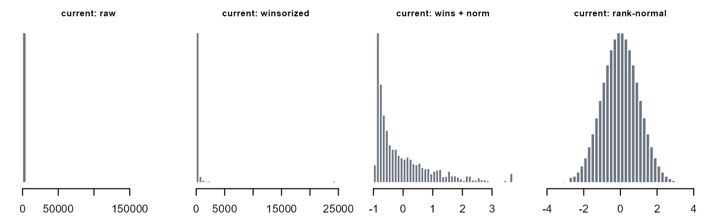
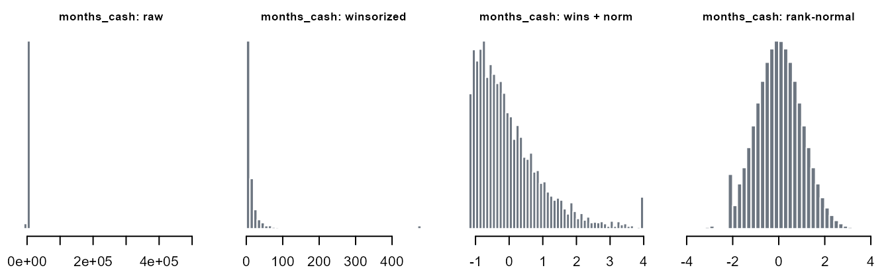
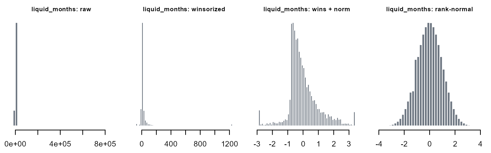
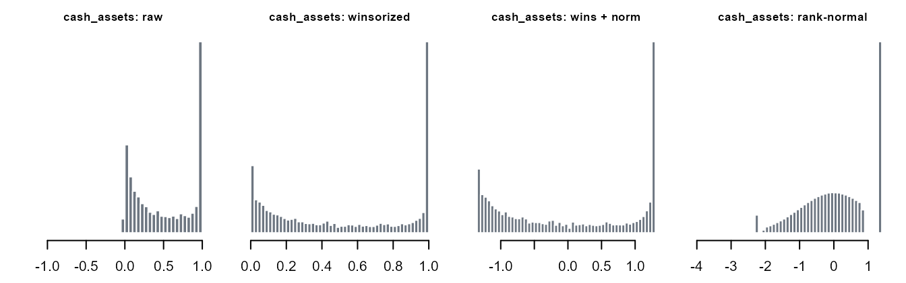
card_table(c("current", "months_cash", "liquid_months", "cash_assets"))
#> textbook_cov rules_cov imputed p01 p25 p50 p75 p99 skew_raw skew_wins asinh
#> current 0.574 0.567 0.433 0.13 5.980 24.10 115.000 24200 11.9 6.95 TRUE
#> months_cash 1.000 1.000 0.000 0.00 2.550 6.40 15.000 477 47.8 6.16 TRUE
#> liquid_months 1.000 1.000 0.000 -75.20 1.670 6.41 19.100 1230 43.8 6.34 TRUE
#> cash_assets 0.988 0.986 0.014 0.00 0.125 0.47 0.964 1 0.0 0.05 FALSE
#> skew_norm
#> current 1.52
#> months_cash 1.50
#> liquid_months 0.69
#> cash_assets 0.05current and months_cash are non-negative
with extreme right tails. After winsorizing they are still heavily
skewed, so they get the asinh step. liquid_months can be
negative (property and debt exceed unrestricted equity). asinh handles
both signs, so negative reserves stay meaningfully below zero instead of
being truncated. cash_assets is a bounded share and needs
little more than clipping.
Leverage
for (v in c("debt_assets", "debt_una", "payables_una")) ratio_card(v)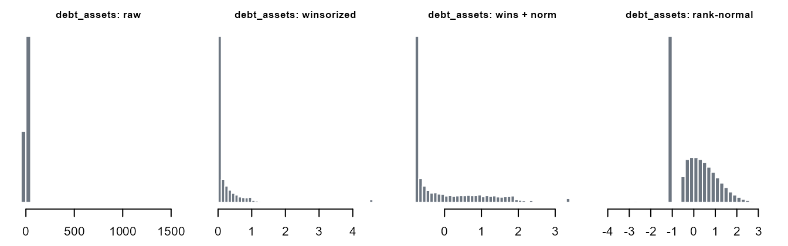
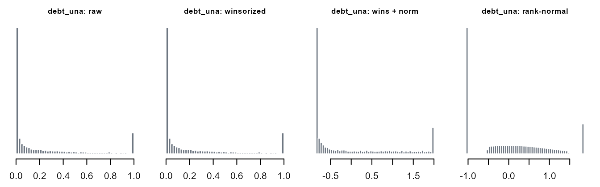
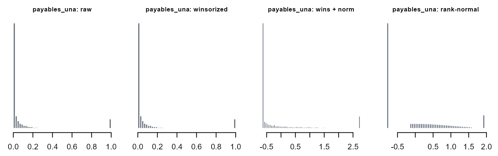
card_table(c("debt_assets", "debt_una", "payables_una"))
#> textbook_cov rules_cov imputed p01 p25 p50 p75 p99 skew_raw skew_wins asinh skew_norm
#> debt_assets 0.988 1 0 0 0 0.0316 0.2760 4.59 30.3 4.78 TRUE 1.23
#> debt_una 0.975 1 0 0 0 0.0394 0.3340 1.00 1.4 1.43 TRUE 0.86
#> payables_una 0.975 1 0 0 0 0.0028 0.0574 1.00 2.9 2.89 TRUE 1.61The bounded shares pile up at 0 (no debt) and, for
debt_una, at 1 (no unrestricted equity). Those spikes are
real, qualitatively distinct states. Rank-normal breaks the ties by
averaging and spreads the spike across the middle of the normal scale.
The winsorized + normalized version keeps the spike as a spike.
Performance
for (v in c("surplus_margin", "return_assets", "na_growth")) ratio_card(v)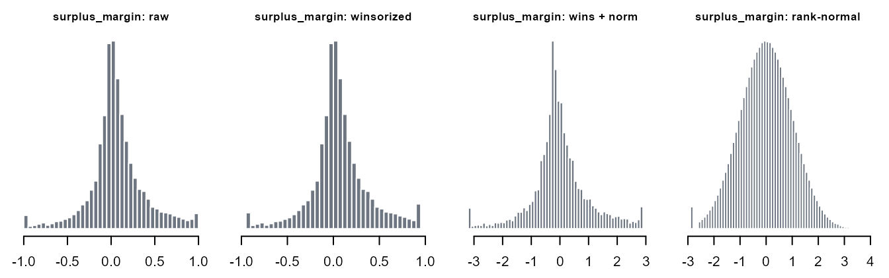
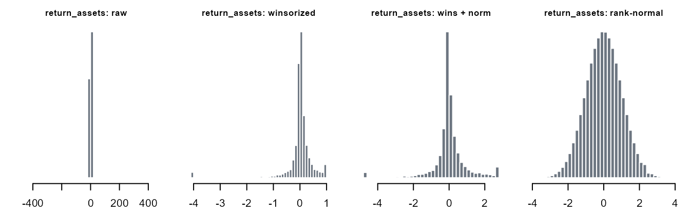
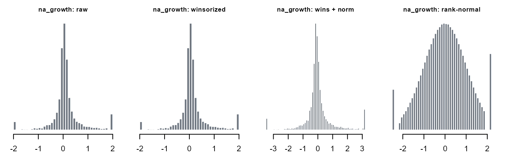
card_table(c("surplus_margin", "return_assets", "na_growth"))
#> textbook_cov rules_cov imputed p01 p25 p50 p75 p99 skew_raw skew_wins asinh
#> surplus_margin 0.995 1.000 0.000 -0.905 -0.0725 0.0360 0.196 0.947 0.0 0.10 FALSE
#> return_assets 0.988 0.986 0.014 -4.080 -0.0502 0.0241 0.148 1.000 -6.3 -4.16 TRUE
#> na_growth 0.969 1.000 0.000 -2.000 -0.0622 0.0557 0.213 2.000 0.3 0.30 FALSE
#> skew_norm
#> surplus_margin 0.1
#> return_assets -1.1
#> na_growth 0.3Because the margin and growth rate are symmetric, they are bounded, so winsorizing is nearly a no-op for them. The definition does the work that winsorizing does for the textbook versions.
Expense structure
for (v in c("prog_exp", "admin_exp", "fundr_exp")) ratio_card(v)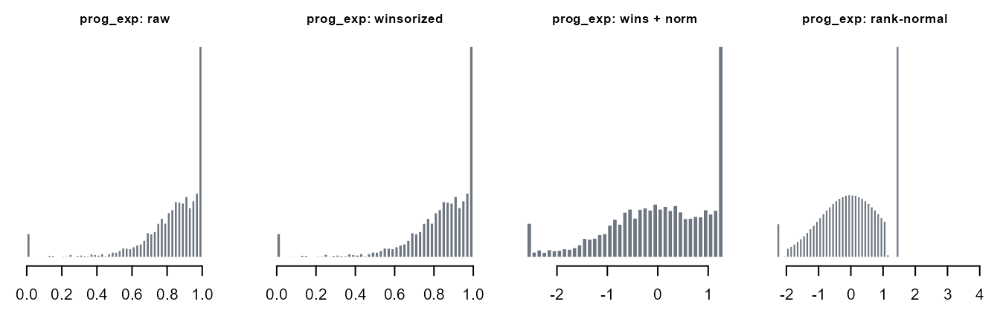
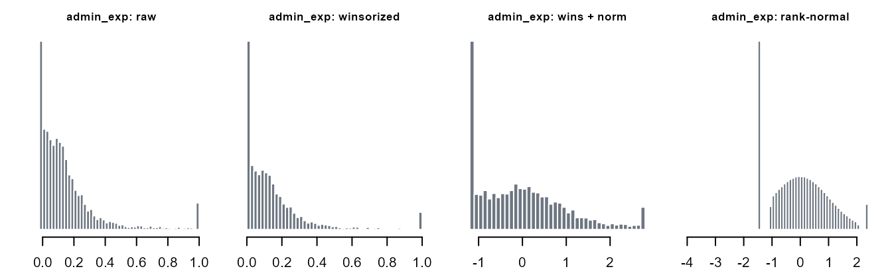
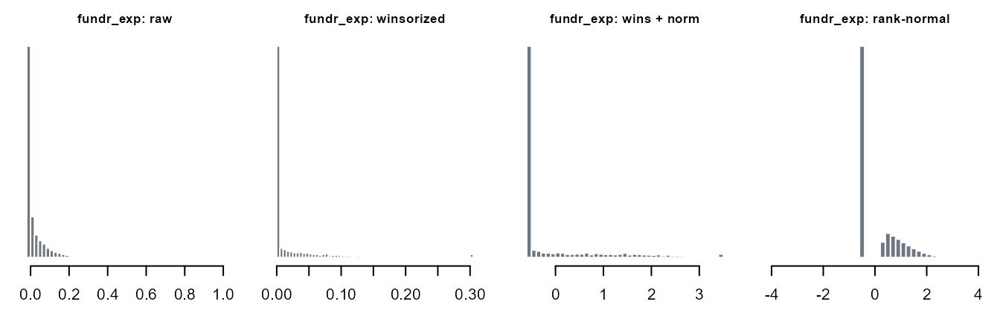
card_table(c("prog_exp", "admin_exp", "fundr_exp"))
#> textbook_cov rules_cov imputed p01 p25 p50 p75 p99 skew_raw skew_wins asinh skew_norm
#> prog_exp 1 0.959 0.041 0 0.7470 0.869 0.9640 1.0 -2.0 -2.01 TRUE -0.64
#> admin_exp 1 0.959 0.041 0 0.0289 0.103 0.2000 1.0 2.4 2.43 TRUE 0.79
#> fundr_exp 1 0.959 0.041 0 0.0000 0.000 0.0256 0.3 6.0 2.89 TRUE 1.72fundr_exp is zero-inflated: most organizations report no
fundraising expense. Section 5 shows what that does to the package’s
hurdle transformation.
Asset structure and revenue model
for (v in c("land_assets", "assets_rev", "self_suff")) ratio_card(v)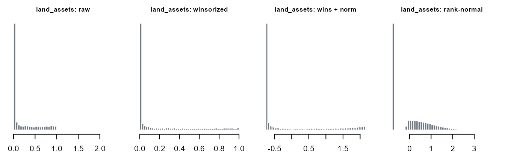
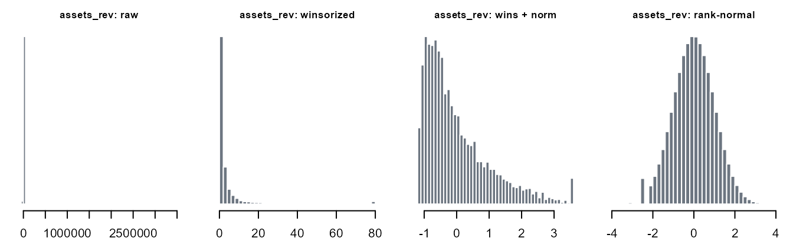
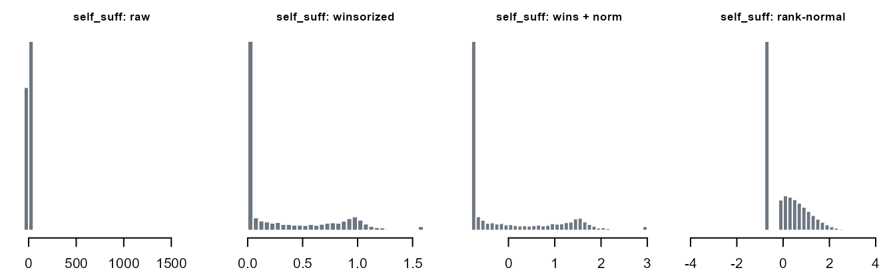
card_table(c("land_assets", "assets_rev", "self_suff"))
#> textbook_cov rules_cov imputed p01 p25 p50 p75 p99 skew_raw skew_wins asinh skew_norm
#> land_assets 0.988 1 0 0 0.000 0.00699 0.359 0.983 1.3 1.28 TRUE 0.98
#> assets_rev 0.995 1 0 0 0.505 1.18000 3.160 78.300 64.7 5.20 TRUE 1.33
#> self_suff 1.000 1 0 0 0.000 0.04240 0.690 1.580 77.0 0.99 FALSE 0.994. Does it matter whether winsorization comes before normalization?
Sometimes. It depends on whether the normalization estimates anything from the data. We use the current ratio and months of cash to show each case.
x <- frame$current
y <- frame$months_cash
zscore <- function(v) (v - mean(v)) / sd(v)
s_fixed <- median(abs(x[x != 0]))(a) A fixed monotone transform with percentile winsorizing: order does not matter. Clipping at the 1st and 99th percentiles and then applying asinh gives the same values as applying asinh and then clipping at the 1st and 99th percentiles, because a monotone function maps percentiles to percentiles.
(b) z-scoring first, then clipping at a fixed z threshold: order matters a lot. Outliers inflate the standard deviation, so almost nothing reaches |z| > 3. The body of the distribution gets squeezed into a narrow band, and correlations with other ratios are attenuated.
z_then_clip <- function(v) pmin(pmax(zscore(v), -3), 3)
c(share_beyond_3sd = mean(abs(zscore(x)) > 3),
sd_after_z_then_clip = sd(z_then_clip(x)),
r_winsorize_then_z = cor(zscore(winsor(x)), zscore(winsor(y))),
r_z_then_clip = cor(z_then_clip(x), z_then_clip(y)))
#> share_beyond_3sd sd_after_z_then_clip r_winsorize_then_z r_z_then_clip
#> 0.009007506 0.348756189 0.286483693 0.192632948(c) Estimated transform parameters: order matters in proportion to how sensitive the estimator is. If the asinh scale is estimated with a moment statistic (the standard deviation) instead of the median, estimating it before winsorizing lets the outliers pick the scale:
s_before <- sd(x)
s_after <- sd(winsor(x))
c(scale_before_winsorizing = s_before, scale_after_winsorizing = s_after,
r_between_resulting_scores = cor(asinh(winsor(x) / s_before), asinh(winsor(x) / s_after)))
#> scale_before_winsorizing scale_after_winsorizing r_between_resulting_scores
#> 1.002728e+04 2.926304e+03 9.816397e-01Rule of thumb. Winsorize first whenever anything downstream is estimated from the data: a standard deviation, a transformation parameter (a log offset, Box–Cox λ, a logit rescaling range), or a centering constant. Use percentile bounds, not z-score bounds. With fixed monotone transforms and percentile winsorizing, the order is irrelevant.
find_best_normalization()already winsorizes before fitting.
5. Correlation matrices
All four versions (plus the package _z columns) use the
same variables in the same order. The order and the outlined blocks come
from hierarchical clustering of the rank-normal matrix, so a block that
“dissolves” in another panel shows how much that transformation changes
the structure. prog_exp is excluded because of the closure
described in Section 2.4.
cmats <- lapply(versions, function(df) cor(df[, model_vars], use = "pairwise.complete.obs"))
hc <- hclust(as.dist(1 - abs(cmats$rank_normal)), method = "complete")
ord <- hc$order
n_block <- 5
blocks <- cutree(hc, k = n_block)[ord]
rect_index <- c(which(!duplicated(blocks)), length(blocks))
plot_corr <- function(C, title) {
C <- C[ord, ord]
res <- corrplot(C, order = "original", tl.col = "black", tl.cex = 0.75,
na.label = "NA", title = title, mar = c(0, 0, 1.5, 0))
corrRect(res, index = rect_index, col = "#bd5416", lwd = 2)
}The blocks, listed in plot order:
split(names(blocks), factor(blocks, levels = unique(blocks)))
#> $`3`
#> [1] "surplus_margin" "return_assets" "na_growth"
#>
#> $`4`
#> [1] "self_suff"
#>
#> $`1`
#> [1] "cash_assets" "land_assets" "current" "payables_una" "debt_assets" "debt_una"
#>
#> $`2`
#> [1] "assets_rev" "months_cash" "liquid_months"
#>
#> $`5`
#> [1] "admin_exp" "fundr_exp"
plot_corr(cmats$raw, "Raw ratios (rules applied)")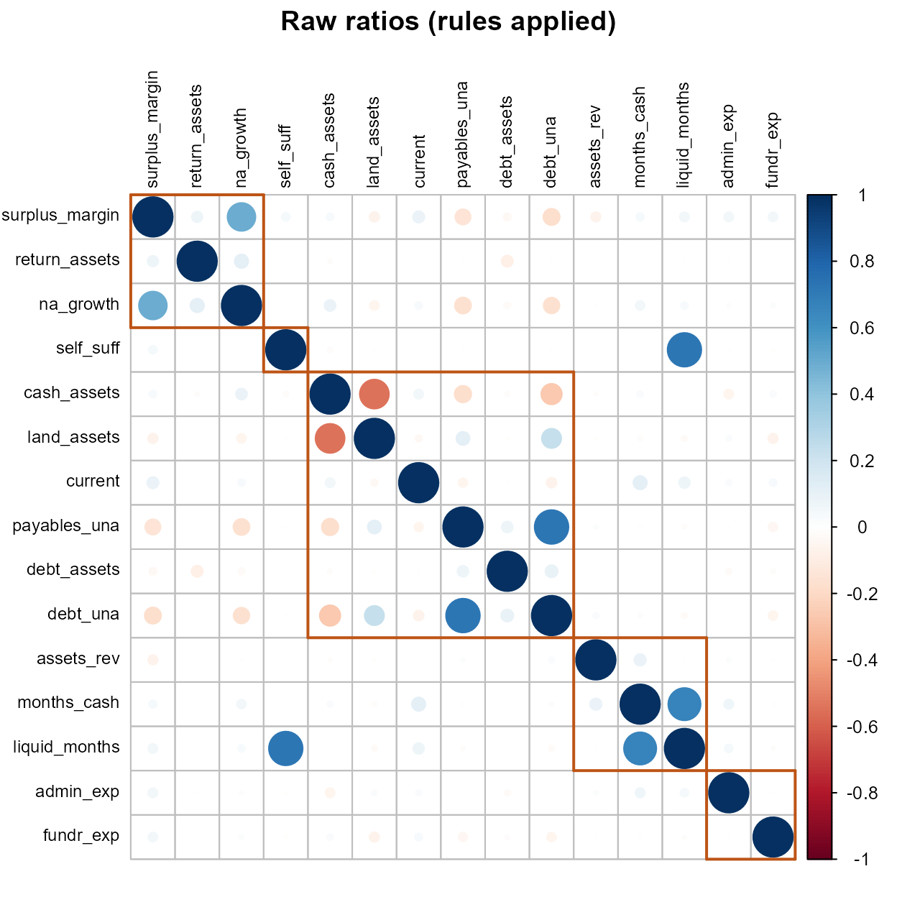
plot_corr(cmats$winsorized, "Winsorized (1st/99th percentile)")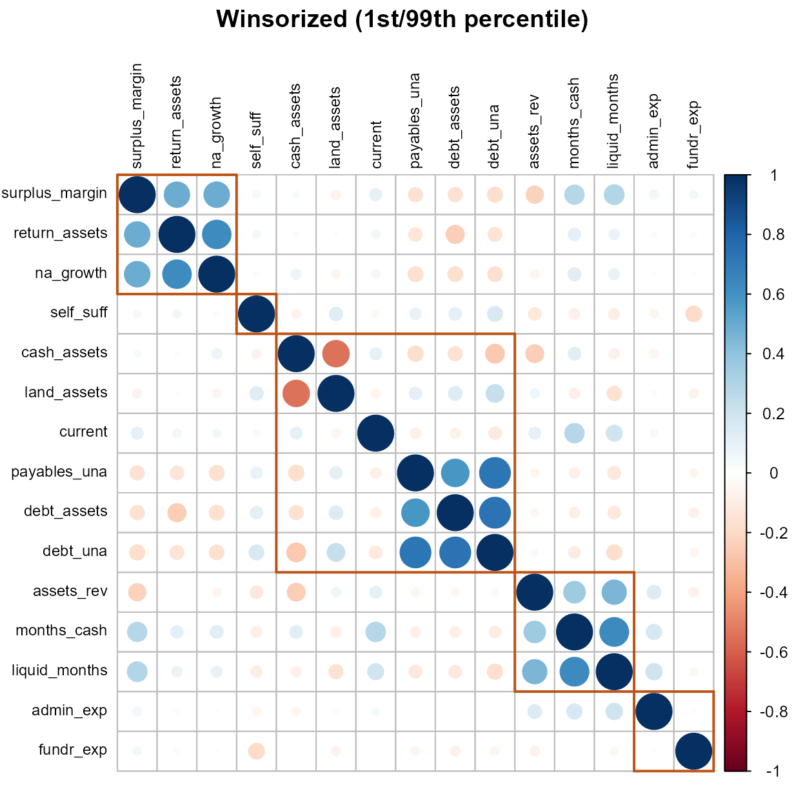
plot_corr(cmats$winsorized_normalized, "Winsorized + normalized (asinh when skewed, z-score)")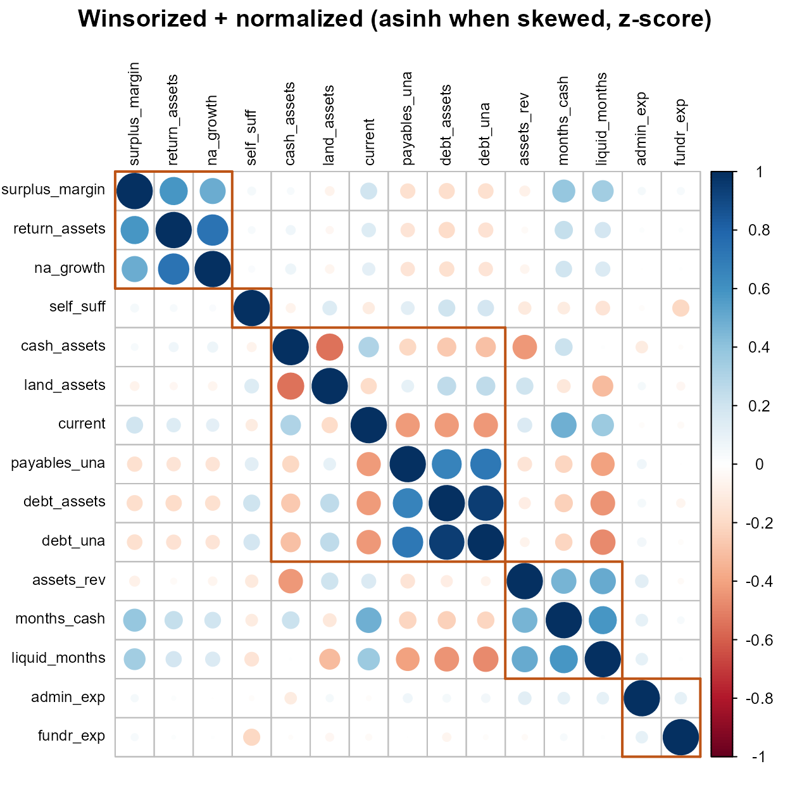
plot_corr(cmats$package_z, "Package _z (apply_transformations)")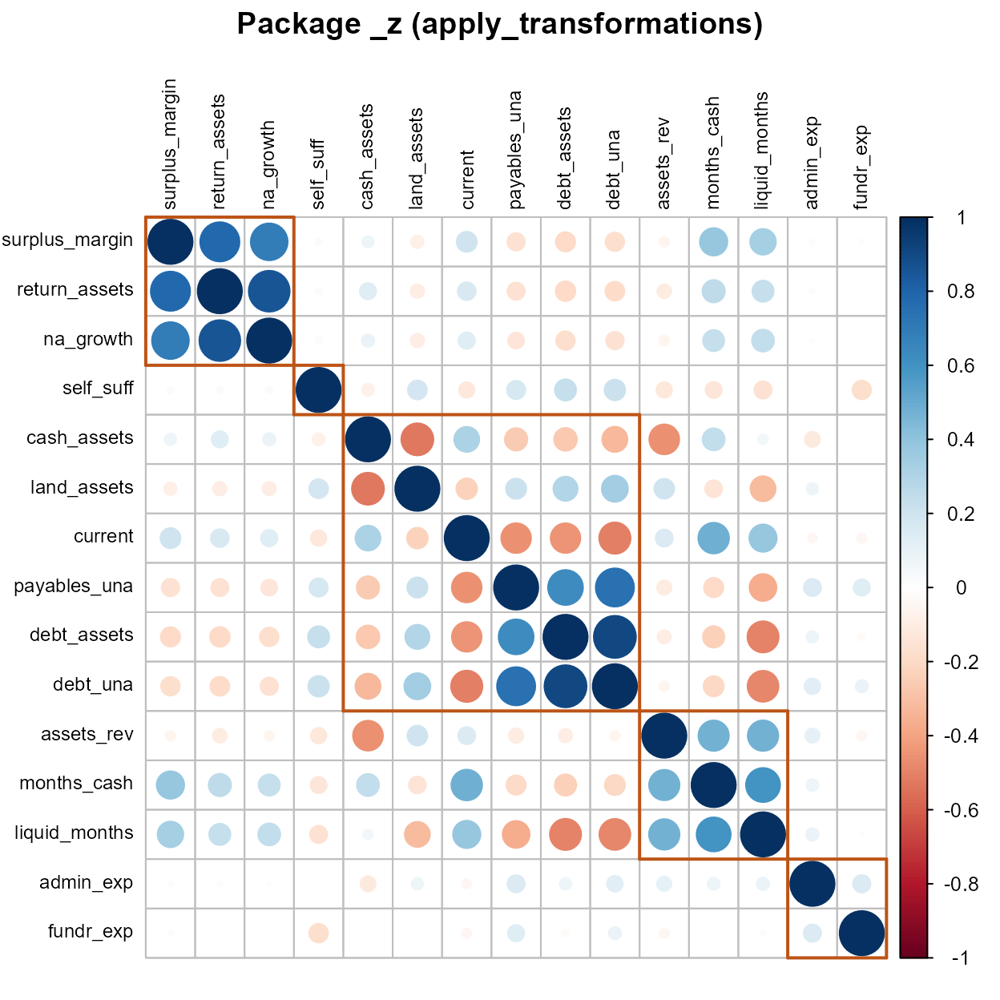
plot_corr(cmats$rank_normal, "Rank-normal")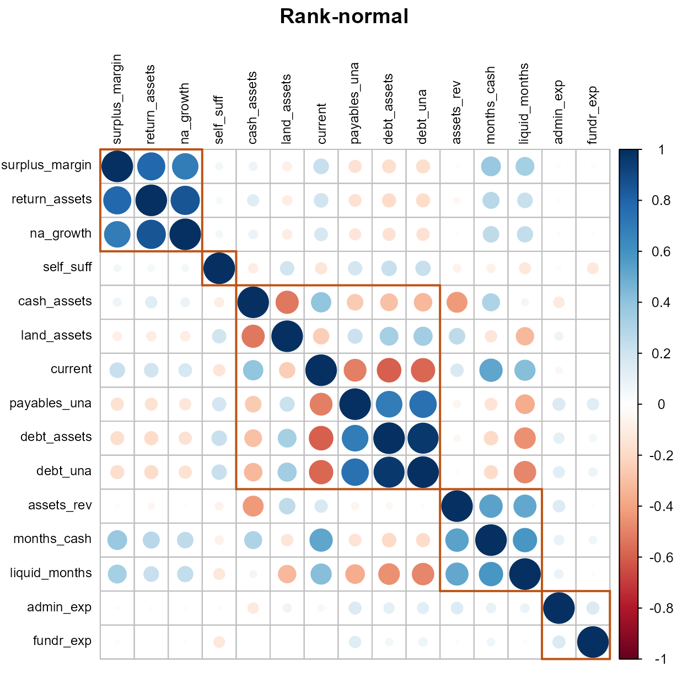
5.1 Scorecard
Each version is scored on:
- shape: mean absolute skewness and excess kurtosis across ratios;
- fidelity: the mean absolute difference between the version’s Pearson correlations and the Spearman (rank) correlations of the raw ratios. Spearman is the benchmark because it reflects the monotone association in the data, whatever the tails look like;
- linear fidelity: the mean correlation of each transformed ratio with its winsorized original. It measures how much interval spacing survives;
- signal: mean |r| off the diagonal, and the number of pairs with |r| ≥ 0.3;
- internal consistency: mean |r| within the hierarchical-clustering blocks shown above versus between them, and overall KMO;
- structure: the number of components retained by parallel analysis.
S <- cor(frame[, model_vars], method = "spearman")
off <- upper.tri(S)
same_block <- outer(cutree(hc, k = n_block), cutree(hc, k = n_block), "==")[model_vars, model_vars]
score_version <- function(df, name) {
df <- df[, model_vars]
C <- cor(df, use = "pairwise.complete.obs")
all_na <- colSums(!is.na(df)) == 0
Cz <- C; Cz[is.na(Cz)] <- 0; diag(Cz) <- 1
pa <- suppressMessages(suppressWarnings(
psych::fa.parallel(Cz, n.obs = nrow(df), fa = "pc", plot = FALSE, n.iter = 20)))
c(all_na_columns = sum(all_na),
mean_abs_skew = mean(abs(sapply(df[!all_na], psych::skew, na.rm = TRUE))),
mean_excess_kurtosis = mean(sapply(df[!all_na], psych::kurtosi, na.rm = TRUE)),
distortion_vs_rank = mean(abs(C - S)[off], na.rm = TRUE),
linear_fidelity = mean(sapply(model_vars[!all_na], function(v)
cor(df[[v]], versions$winsorized[[v]], use = "pair"))),
mean_abs_r = mean(abs(C)[off], na.rm = TRUE),
pairs_abs_r_ge_0.3 = sum(abs(C)[off] >= 0.3, na.rm = TRUE),
within_block_abs_r = mean(abs(C)[off & same_block], na.rm = TRUE),
between_block_abs_r = mean(abs(C)[off & !same_block], na.rm = TRUE),
KMO = psych::KMO(Cz)$MSA,
parallel_components = pa$ncomp)
}
invisible(capture.output(
scorecard <- t(mapply(score_version, versions, names(versions)))))
# Sensitivity: winsorizing at the 5th/95th percentiles, as in the AA/NH/PI study
invisible(capture.output(sens <- rbind(
winsorized_5_95 = score_version(as.data.frame(lapply(frame, winsor, p = 0.05)), "w5"),
winsorized_normalized_5_95 = score_version(as.data.frame(lapply(frame, winsor_normalize, p = 0.05)), "wn5"))))
round(rbind(scorecard, sens), 3)
#> all_na_columns mean_abs_skew mean_excess_kurtosis distortion_vs_rank
#> raw 0 19.751 1227.911 0.188
#> winsorized 0 3.064 16.347 0.117
#> winsorized_normalized 0 0.985 1.437 0.058
#> package_z 0 0.578 -0.153 0.035
#> rank_normal 0 0.283 -0.248 0.021
#> winsorized_5_95 0 1.535 2.358 0.080
#> winsorized_normalized_5_95 0 0.840 -0.016 0.049
#> linear_fidelity mean_abs_r pairs_abs_r_ge_0.3 within_block_abs_r
#> raw 0.657 0.069 5 0.179
#> winsorized 1.000 0.144 10 0.327
#> winsorized_normalized 0.889 0.196 23 0.432
#> package_z 0.811 0.216 25 0.476
#> rank_normal 0.782 0.221 27 0.507
#> winsorized_5_95 0.891 0.175 14 0.398
#> winsorized_normalized_5_95 0.825 0.203 22 0.455
#> between_block_abs_r KMO parallel_components
#> raw 0.040 0.367 6
#> winsorized 0.095 0.644 5
#> winsorized_normalized 0.133 0.652 5
#> package_z 0.147 0.685 5
#> rank_normal 0.145 0.678 5
#> winsorized_5_95 0.116 0.647 5
#> winsorized_normalized_5_95 0.136 0.655 5Ratios for which the package _z column is entirely
missing:
How to read the scorecard:
- Raw → winsorized is the largest single improvement. Clipping 2% of values cuts distortion by more than a third and more than doubles the typical correlation. Tails were hiding most of the covariance.
- Winsorized → winsorized + normalized cuts distortion roughly in half again. It brings skewness and kurtosis near normal, and it raises both within-block correlation and the number of meaningful pairs. Linear fidelity stays high: the transformed values are still close to linear in the winsorized originals.
- Rank-normal has the least distortion and the strongest blocks, but the lowest linear fidelity. Its gains come from discarding spacing.
-
Package
_zis competitive on the correlation metrics for the ratios it scores. But it returns an all-NAcolumn for a zero-inflated share, which silently removes that ratio from any model, and its shape metrics exclude that column. Its median/MAD scaling also leaves variances unequal across ratios. - The 5th/95th percentile rows show the winsorizing trade-off. Clipping 10% of values instead of 2% moves every version closer to the rank benchmark and lowers linear fidelity. The AA/NH/PI study’s 5/95 choice is defensible for correlation structure, but it treats the top and bottom 5% of organizations as identical to the 5th and 95th percentile values.
6. Recommendations
Undefined cases: decide direction first, then choose rule or imputation.
| Situation | Example | Direction known? | Treatment |
|---|---|---|---|
| Denominator ≤ 0 and the ratio’s meaning implies the worst (or best) state | leverage on negative unrestricted NA; growth from a negative base | yes | Rule: bounded or symmetric reformulation that is monotone with the textbook ratio where it is valid |
| Denominator = 0 because the component doesn’t exist | current ratio with no current liabilities | ask the data: anchor profile | Conditional (row-plus-column) stochastic imputation, or percentile-matched rule if a fixed value is required |
| Component not reported | functional expenses of non-501(c)(3) filers | no: missing, not zero | Conditional imputation; never zero |
| Both numerator and denominator are zero | no current assets and no current liabilities | ask the data | Imputation placed them below typical, not at zero |
- Fixed benchmark caps (for example, current ratio = 3) should not be borrowed from corporate finance. On the 990 they sit well below the median of the observed distribution.
- Bottom-coding a denominator at $1 turns a ratio into a dollar amount for the affected cases.
- Median imputation is only right when the anchor profile says the group is typical. For every undefined group examined here it isn’t, and median fills weaken the correlations the index depends on.
Transformations.
- Raw ratios (even with rules applied) should not enter a correlation-based model. A few extreme values drive the Pearson correlations, and block structure is hard to see.
- Winsorizing alone is not enough. Skewness and kurtosis stay high, and correlations are still visibly distorted relative to the rank benchmark.
- Winsorized + normalized (percentile winsorizing, then asinh with a robust median scale for ratios that stay skewed, then a z-score) gets most of the way to rank-normal fidelity and internal consistency. It keeps interval spacing within the body of each distribution, and its parameters (bounds, scale, mean, standard deviation) can be stored and reapplied to another year. This is the recommended default for index construction.
- Rank-normal gives the highest fidelity and the cleanest blocks, and it is a good robustness check. But it throws away spacing: a 2-month and a 20-month reserve are distinguished only by rank. It also turns real spikes (no debt; no unrestricted equity) into arbitrary spreads. Scoring a new year needs the reference-year distribution.
-
Package
_zperforms comparably on correlations for the ratios it scores. But its hurdle and robust-MAD path fails on zero-inflated shares: a ratio whose median is zero gets a MAD of zero and comes back entirelyNA(see the output above). That needs a fix before the_zcolumns are used for index construction. - Winsorizing level is a separate choice from the transformation. 1/99 keeps more real variation; 5/95 gives cleaner correlations. Report both when dimensions are sensitive to it.
Order of operations. Winsorize (at percentiles) before estimating any normalization parameter. Never clip on z-scores computed from unwinsorized data.
Implications for identifying dimensions.
-
Blocks. With the full set of ratios measured this
way, parallel analysis retains more components than a two-dimension
solution. In this sample the clustering separates:
- an operating performance block (surplus margin, return on assets, net-asset growth);
- a reserves block (months of cash, liquid months, asset intensity);
- a balance-sheet structure and leverage block (the debt ratios, together with the current ratio, cash share, and land share).
- Ratios that share inputs. Some apparent dimensions come from definitions, not from organizational behavior. Program, admin, and fundraising shares sum to 1 by construction. Leverage ratios on unrestricted equity rank organizations almost identically to debt-to-assets once negative denominators are handled. The next step is to re-run dimension discovery on the winsorized + normalized frame with one indicator per such family, then check which blocks survive that restriction.